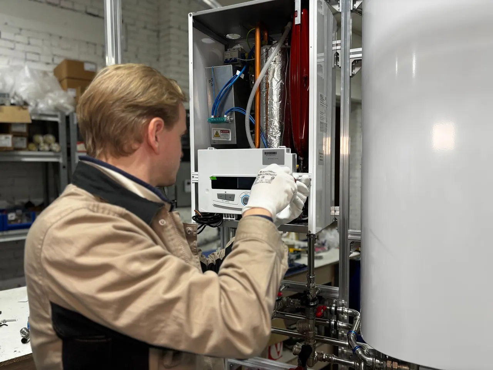

For Homes
We handle laundry plumbing for homeowners and renters. Whether your washer is backing up, leaking, or you want a new sink, we diagnose and fix it.
- Washer drain backing up
- Supply line leak
- New laundry sink install
Laundry Room Plumbing Services in Arlington Heights covers everything behind and under your washer: supply lines, shut-off valves, standpipes, drain traps, and laundry sink rough-ins. Whether your machine is backing up into the utility sink or you want a new laundry sink installation Arlington Heights homeowners can count on, we handle the diagnosis, repair, and cleanup. We work throughout Cook County and know the older drain layouts common in this area.
 Drain flow checkSupply line testFull-cycle run
Drain flow checkSupply line testFull-cycle runEvery laundry plumbing job is different, but most include a diagnostic visit, a clear explanation of the problem, and a repair or installation that is tested before we leave. Here is what is typically covered.

We pull the washer out and inspect the supply lines, shut-off valves, standpipe, P-trap, and drain connection. If the drain is slow, we run a camera or auger to find the blockage. You get a clear explanation of what we found and what it will take to fix it.
We clear laundry drain clogs with a drain snake, auger, or hydro jetter. If the blockage is in the main line, we move to sewer line cleaning. After clearing, we test the drain with a full washer cycle to confirm it flows properly.
Brittle supply lines and seized shut-off valves are common in older laundry rooms. We replace them with braided stainless hoses and quarter-turn ball valves from Watts or Moen. This prevents leaks and makes future maintenance easier.
We install utility sinks and laundry basins, including the drain, trap, supply lines, and faucet. If new rough-in is needed, we cut into the wall, run PEX tubing or copper pipe, and tie into existing plumbing to code.
A cracked or undersized standpipe can cause overflow during the spin cycle. We replace damaged standpipes and P-traps with properly sized PVC pipe and fittings, ensuring the drain handles the washer's discharge rate.
After any repair or installation, we reconnect the washer, run a full cycle, and watch the drain and supply lines through all stages. We clean up the work area, put the machine back, and walk you through what we did.
The approach is the same for a home and a business. What changes is the access, the schedule and who needs the paperwork.
We handle laundry plumbing for homeowners and renters. Whether your washer is backing up, leaking, or you want a new sink, we diagnose and fix it.
We service commercial laundry rooms in apartments, laundromats, and multi-unit buildings. From multiple washer hookups to shared drain lines, we keep them running.
A plain-language look at what Laundry Room Plumbing Services involves and when it is needed.
See how it worksThat includes the hot and cold supply lines, the shut-off valves behind the washer, the standpipe and P-trap, the drain connection to your home's main line, and any laundry sink or floor drain in the room. Most of the work is hidden behind the machine or inside the wall, which is why small drips and slow drains often go unnoticed until water is already on the floor.
In Arlington Heights, laundry rooms sit in basements, first-floor mudrooms, and second-floor closets, and each layout creates its own failure pattern. Basement laundry areas in 60005 and 60004 often share a drain line with a floor drain or sump pit, so a washing machine drain clog Arlington Heights 60004 residents call about is sometimes a main-line issue, not a machine issue. Upstairs laundry closets are more likely to show supply-line leaks that stain the ceiling below. If you have been searching for a laundry plumber near me Arlington Heights IL, we handle both the visible fixture work and the hidden drain and supply problems behind it.
Laundry plumbing problems start small and get worse; testing the drain and supply lines catches them early.

Every job starts with a real diagnosis, not a guess. Here is what to expect from the first call to the final test cycle.
You tell us what the washer is doing: backing up, leaking, draining slow, or not filling. We ask about the machine age, the room layout, and whether the drain has backed up before. That conversation usually tells us whether to bring a drain snake, a hydro jetter, or replacement supply lines and valves.

We pull the washer out, inspect the supply lines, shut-off valves, standpipe, P-trap, and drain connection. If the drain is slow, we run a sewer camera or auger to find out whether the blockage is in the laundry branch or further down the main line. You get a clear explanation of what we found before any work starts.

Most drain clogs clear in 30 to 60 minutes with a drain snake or hydro jetter. Supply-line and valve replacements take about an hour. A new laundry sink rough-in or standpipe replacement is a longer job, usually two to four hours, depending on how much wall access is needed and whether we are tying into existing copper pipe or PEX tubing.

We reconnect the washer, run a full cycle, and watch the drain and supply lines through the fill, wash, and spin stages. If anything weeps or backs up, we fix it before we leave. Then we clean up the work area and put the machine back in place.

Before we go, we show you what we replaced, what we tested, and what to watch for. If a shut-off valve is old or a hose is near the end of its life, we point it out so you can decide whether to replace it now or later. No pressure, just information you can use.

Move across a circle, or focus it and press Enter, for an illustrative thermal view of the photograph.

Clears lint, detergent buildup, and soft blockages from laundry standpipes and branch lines.

Scours pipe walls clean of scale, grease, and heavy buildup that a snake cannot remove.

Shows the inside of the drain line so we can confirm the blockage location and pipe condition.

Used to remove and replace supply lines, valves, and pipe sections during repairs.

Connects PEX tubing for new supply lines and laundry sink rough-ins.
Thermal views are illustrative, generated from the photographs.
Joins copper pipe for supply-line repairs and installations where copper is preferred.
Checks water pressure after supply-line work to confirm the system is holding and flowing properly.
We run a sewer camera before recommending drain repairs so we know exactly what is blocking the line. This prevents unnecessary work and ensures the fix addresses the real problem, whether it is lint in the standpipe or root intrusion in the main line.
After any drain or supply repair, we run a complete washer cycle and watch the fill, wash, and spin stages. This confirms the drain handles the discharge rate and the supply lines hold pressure under normal use.
We use PVC pipe, ABS pipe, and approved fittings, and we schedule inspection when required.
When a leak is suspected behind a finished wall, we use leak detection equipment to pinpoint the source. This limits the repair to the affected area and avoids unnecessary demolition.

Your washing machine drain backs up every time you run a load, and water pools around the machine.
We clear the standpipe and branch line with a drain snake or hydro jetter, then run a camera to check for a main-line blockage. If the main line is restricted, we move to sewer line cleaning. We test with a full cycle before we leave.
Outcome: Your washer drains properly, the floor stays dry, and you can run laundry without watching for overflow.

You are remodeling your basement and want to add a laundry sink next to the washer.
We cut into the wall, run new drain and supply lines using PEX tubing or copper pipe, install the sink, trap, and faucet, and tie into existing plumbing to code. We handle the permit and inspection if required.
Outcome: You get a functional laundry sink with proper drainage and supply, installed cleanly and ready for daily use.

Your laundry room shut-off valves are old and you cannot turn them off by hand.
We replace the seized valves with quarter-turn ball valves from Watts or Moen and install new braided stainless supply lines. We pressure-test the lines after replacement to confirm there are no leaks.
Outcome: You can shut off the water to your washer easily, and the new valves and hoses will not leak or seize.

You notice a musty smell in the laundry room and suspect a hidden leak behind the wall.
We use leak detection equipment to find the source without tearing out the wall. Once located, we repair the leaking pipe or fitting, replace any damaged section, and check for mold or water damage.
Outcome: The leak is fixed, the musty smell goes away, and you avoid larger water damage and mold remediation costs.

Your laundry room floor drain is backing up and you smell sewer gas.
We clear the floor drain and trap, check the connection to the main line, and repair or replace a dry or damaged trap. If the main line is blocked, we clear it with a drain snake or hydro jetter.
Outcome: The floor drain flows properly, the sewer smell is gone, and the room is safe and dry.

Arlington Heights has a mix of older homes with original galvanized or copper supply lines and newer construction with PEX. In older homes, laundry rooms in basements and first-floor mudrooms often have undersized drains or shared lines with floor drains, which makes a washing machine drain clog Arlington Heights 60004 residents call about more likely to be a main-line issue.
Winter freezes can also affect laundry supply lines in unheated basements or garages, causing frozen pipes and burst connections. We know the building stock in Cook County and plan for these conditions. If you need affordable laundry room plumbing in Arlington Heights, Illinois, we diagnose the whole system, not just the visible fixture.
We also handle the permits and inspections that Arlington Heights requires for new drain and supply rough-ins.

Before: A homeowner in Scarsdale had a washing machine that backed up into the utility sink every cycle. The standpipe was partially clogged with lint and detergent residue, and the main line had early root intrusion. Water was pooling on the floor after each load.
After: We cleared the standpipe with a drain snake, then hydro jetted the main line to remove roots and buildup. We replaced a brittle supply line and a seized shut-off valve. The drain now handles a full washer cycle without backing up, and the floor stays dry.
We recommended an annual drain cleaning and a lint trap on the standpipe to reduce future buildup. The homeowner now runs a hot water flush monthly to keep the line clear.
Before: A Northgate homeowner wanted a utility sink next to the washer but had no existing rough-in. The basement wall was finished, and the nearest drain line was several feet away. They were using a plastic tub to hand-wash items.
After: We cut into the wall, ran new PEX supply lines and a PVC drain line to the main stack, and installed a deep utility sink with a Moen faucet and P-trap. The inspection passed, and the homeowner now has a functional laundry sink with hot and cold water.
We advised running hot water through the sink weekly to keep the trap clear and checking the supply lines annually for wear. The sink is now used daily for hand-washing and soaking.
Before: A homeowner in Old Arlington Heights noticed a musty smell and a small stain on the ceiling below the laundry room. The supply line behind the washer had a pinhole leak that had been dripping for weeks, soaking the drywall and subfloor.
After: We used leak detection equipment to find the leak without tearing out the whole wall. We replaced the damaged copper section with PEX tubing, repaired the drywall, and pressure-tested the line. The stain was treated, and the musty smell cleared within a week.
We recommended replacing the remaining old copper lines in the laundry area to prevent future pinhole leaks. The homeowner scheduled a repipe for the following spring.
Most laundry plumbing calls fall into a few common categories. Here are the problems we see most often and how we fix them.
A properly working laundry drain and supply system that you can trust.
A backed-up standpipe or utility sink is usually a partial blockage that we can clear the same day with a drain snake or hydro jetter. We test the line with a full washer cycle before we leave, so you know the drain is actually moving water and not just draining slowly enough to look fine.
Supply-line leaks behind a washer can run for weeks before they show. We use leak detection equipment and a pressure gauge to check the hot and cold lines, the shut-off valves, and the drain connection. If a valve is seized or a supply line is brittle, we replace it with braided stainless or PEX tubing while we are already there.
New laundry sink installation Arlington Heights projects need the right trap, venting, and drain size to pass inspection.
We lay drop cloths, pull the washer out carefully, and keep water contained while we work. When we are done, the machine goes back, the hoses are reconnected, and we run a test cycle so you can see the drain and supply lines working before we pack up.
Clear records you can keep and share.
Before and after of the work area
What we replaced and why
Drain flow and supply pressure
How to keep the drain clear
Your laundry plumbing has two jobs: bring hot and cold water in, and carry wastewater out. Both need to work together.
The hot and cold lines and valves feeding the washer.
The standpipe, trap, and branch line carrying water away.
The vent pipe that lets air in so water drains smoothly.
A list like this tells people straight away whether you cover their street. Not listed? Call and ask: it only takes a minute.
Based in Arlington Heights and covering the places around it. Pick one for local details.
A new laundry sink installation with rough-in starts higher because it involves cutting into the wall, running new drain and supply lines, and tying into existing plumbing. We give you the price before we start.
A washing machine drain backs up when the standpipe or branch line is partially clogged with lint, detergent residue, or scale. In older Arlington Heights homes, the laundry drain may also tie into a main line that has root intrusion or buildup. We run a drain snake or sewer camera to find the blockage, clear it, and test with a full washer cycle. If the main line is the problem, we move to hydro jetting or sewer line cleaning.
Same-day laundry sink installation is possible when the drain and supply rough-in already exist and the sink is a direct replacement. A new install where we cut into the wall and run new drain and supply lines usually takes two to four hours and may need a second visit for inspection. Call us with your setup and we will tell you what the day looks like.
A laundry drain clog is fixed by clearing the standpipe and branch line with a drain snake or auger, then flushing the line to confirm flow. If the clog is grease, lint, or scale, a hydro jetter does a more thorough job. Do not use chemical drain cleaners in a laundry standpipe; they can damage PVC pipe and do not clear the main blockage. We clear the line and test it with a full washer cycle before we leave.
Other services from the same team.
If your washer is backing up, leaking, or not draining, call Five Star Plumber LLC at (224) 643-9856. Our team is ready to diagnose and fix your laundry plumbing problem today.
Call (224) 643-9856 or email us and we will get back to you fast. Tell us what is going on and we will tell you what it takes to fix it.